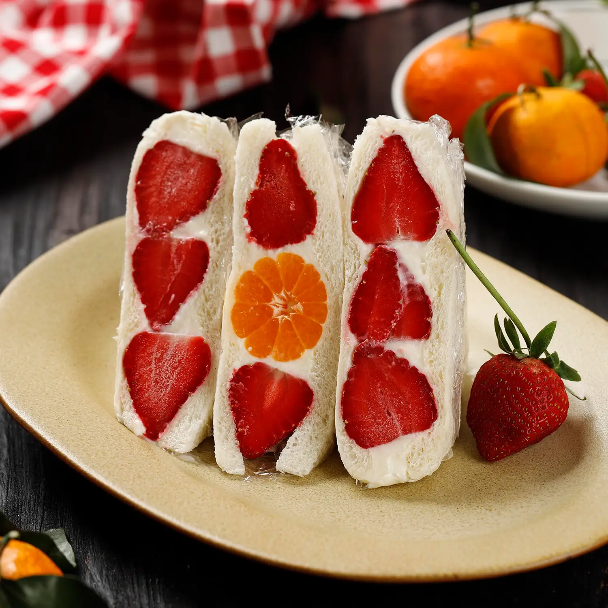

Strawberry Sando
Home

Description
Though it may seem unusual at first, fruit sandwiches have been a longtime trend in Asian food culture, tracing back to Japan as its main origin.
These sandwiches are an incredibly popular item in Japanese cafes and convenience stores, adored by many for its cute aesthetic as well as its delicious taste.
These fruit sandwiches are filled with fresh fruits and whipped cream between slices of Japanese milk bread, also known as shokupan.
Symmetrically shaped strawberries or other fresh fruits make the centerpiece of the sandwich, as well as the sweetened whipped cream that truly makes it all to be heavenly.
Every bite of this sandwich is a burst of sweet and juicy flavor, which makes it to be one of the most refreshing sandwiches to indulge in during the summertime.
Strawberry sando in particular reminds me of strawberry shortcake but in sandwich form, making it to be the most convenient way to satisfy that cake craving at 8 am.
Ingredients
- 10 fresh, sweet, ripe strawberries
- 4 slices milk bread, regular white bread, or brioche
- 1/2 cup mascarpone cheese
- 1/4 teaspoon vanilla extract
- 1 very small pinch salt
- 2 tablespoons confectioner's sugar
- 1 cup very cold heavy cream
Instructions
- Hull strawberries with a paring knife, cutting out the green tops only, and set aside until needed. Trim the crusts off bread; trim each slice into a square.
- Add mascarpone cheese, vanilla, a few grains of salt, and confectioner’s sugar to a mixing bowl; whisk or use an electric hand mixer on high speed to beat until light and fluffy.
- Pour in cold whipped cream, and continue to beat just until very stiff peaks have formed. Be careful not to exceed stiff peak stage, as cream will separate and become grainy. Spread each slice of bread with a thick layer of cream, going all the way to edges.
- On 2 slices, place 3 whole strawberries tightly together from 1 corner of the slice to the other. Place 2 smaller strawberries, or a larger one cut in half, in the other two corners with pointed ends facing out.
- Fill gaps with whipped cream, and generously cover strawberries with more whipped cream. Top with the other slice of bread, and press down lightly. Use remaining whipped cream to fill in the sides. Use the edge of a knife to square and smooth the surface.
- Use a knife to make a mark on the top slice to indicate the direction of the center row of strawberries. Wrap tightly in plastic and refrigerate for at least 1 hour and up to 2 hours.
- Cut sandos carefully on the diagonal with a serrated knife. For a nicer presentation, use a paring knife to scrape any excess whipped cream from the cut surface of strawberries, to fill in any gaps, and to reveal their glistening red color underneath. Plate and serve.